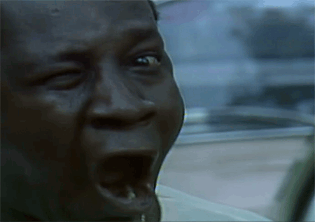

Primeiro Teste de XHTML - Ola, Mundo!
Este e o primeiro teste de XHTML
Esta imagem a cima pode lhe contar a historia de Mussum, um grande artista da comedia Os Trapalhoes. Basta clicar na imagem!
Os textos a seguir sao apenas para demonstrar a funcionabilidade dos comandos utilizados em HTML .
O proximo paragrafo e apenas para encher espaco para melhor vizualizacao dos comandos executados.
- Quem manda na minha terra sou euzis!
Mussum
-
Mais vale um bebadis conhecidiss, que um alcoolatra anonimis.
Mussum
-
Delegadis gente finis.
Mussum
-
Cevadis im ampola pa arma uma pindureta.
Mussum
Ta deprimidis, eu conheco uma cachacis que pode alegrar sua vidis.
Mussum
-
Diuretics paradis num copo e motivis de denguis.
Mussum
- 1 Frase do Mussum
- O melhor Suco de cevadiss.
Mussum
- 2 Frase do Mussum
- Atirei o pau no gatis, per gatis num morreus.
Mussum
- 3 Frase do Mussum
Em pe sem cair, deitado sem dormir, sentado sem cochilar e fazendo pose.
Mussum

Para obter mais informacoes quanto a todo o conteudo exposto neste site, acesse :
Google.com
Aqui voce pode acesso ao conteudo: Historia do Mussum
Aqui voce pode acesso ao conteudo desde o Inicio
Toda a programacao exibida a cima foi feita com muito carinho e atencao!
Criado por: WilliamRBM
E-mail : Indisponivel no momento.
Site: Indisponivel no momento.
Lembrete: Ao produzir ou estudar, beba liquidos com frequencia.